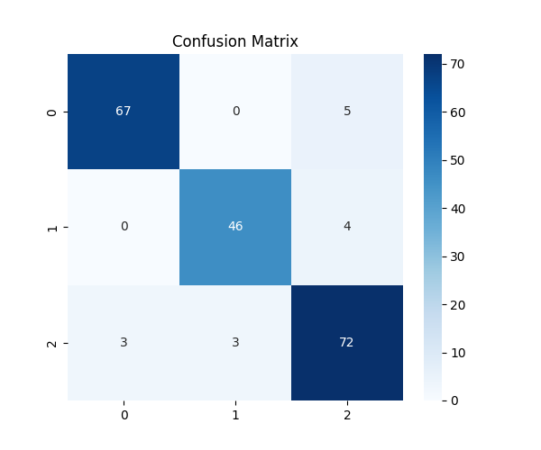
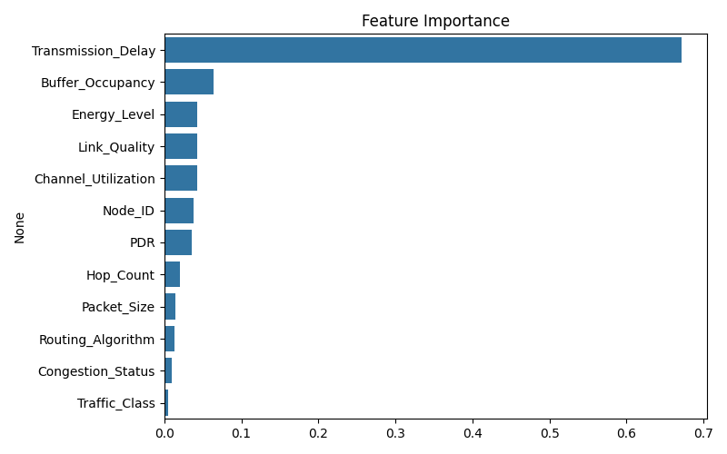
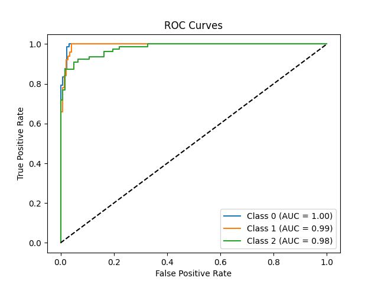
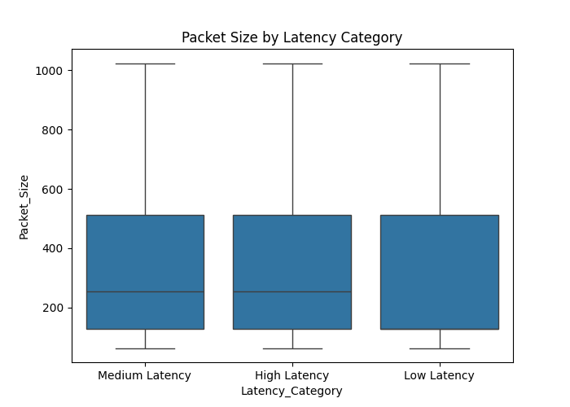
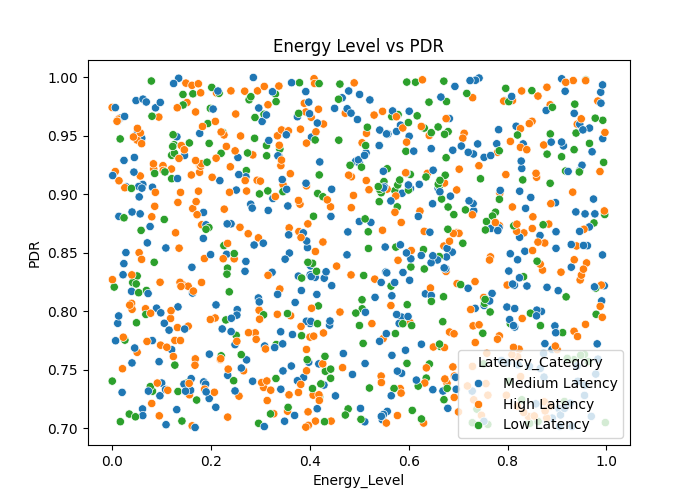
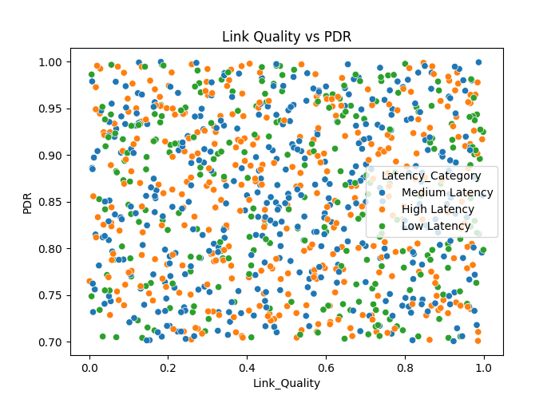

Machine Learning-Based Packet Delivery Prediction in Wireless Sensor Networks: A Random Forest Approach
Abstract: This report presents a comprehensive study on predicting packet delivery latency categories in Wireless Sensor Networks (WSNs) using a Random Forest machine learning classifier. The project addresses the critical challenge of network performance optimization by accurately predicting latency patterns based on network parameters. Our Random Forest model achieved an overall accuracy of 93% on a test dataset of 200 samples, demonstrating the effectiveness of ensemble learning methods for WSN packet delivery prediction. The study provides insights into feature importance and practical implications for network management.
1. Introduction
1.1 Wireless Sensor Networks Overview
Wireless Sensor Networks (WSNs) represent a fundamental technology in modern distributed computing systems, consisting of spatially distributed autonomous sensors that monitor physical or environmental conditions. These networks play crucial roles in various applications including environmental monitoring, industrial automation, smart cities, and Internet of Things (IoT) deployments. WSNs are characterized by resource constraints, including limited energy, processing power, and bandwidth, making network optimization paramount for sustained operation.
1.2 The Challenge of Packet Delivery Prediction
One of the most critical challenges in WSN management is predicting and optimizing packet delivery performance. Network latency directly impacts the quality of service (QoS) and overall network efficiency. Unpredictable latency can lead to:
- Data Loss: Critical sensor readings may become obsolete due to excessive delays
- Energy Inefficiency: Retransmissions and failed deliveries waste limited battery resources
- Network Congestion: Poor latency prediction can exacerbate congestion issues
- Application Performance: Real-time applications require predictable network behavior
1.3 Project Objective
This project aims to develop and evaluate a machine learning-based approach for predicting packet delivery latency categories in WSNs. Specifically, we employ a Random Forest classifier to predict whether packet delivery will fall into Low, Medium, or High latency categories based on various network parameters.
2. Problem Definition
2.1 Formal Problem Statement
The core problem addressed in this study is the multi-class classification of packet delivery latency in WSNs. Formally, given a set of network features X = {x₁, x₂, ..., xₙ}, we aim to predict the latency category y ∈ {Low Latency, Medium Latency, High Latency}.
2.2 Dataset Description
The dataset contains 1,000 samples of WSN packet delivery instances, characterized by the following features:
Network Topology Features:
- Node_ID: Unique identifier for network nodes
- Hop_Count: Number of intermediate nodes in the transmission path
Transmission Characteristics:
- Transmission_Delay: Time taken for packet transmission (continuous)
- Buffer_Occupancy: Percentage of buffer utilization (0-100%)
- Channel_Utilization: Percentage of channel usage (0-100%)
Network Quality Metrics:
- Energy_Level: Remaining energy level of transmitting nodes (0-1)
- Link_Quality: Quality of wireless links (0-1)
- PDR (Packet Delivery Ratio): Successful packet delivery rate (0-1)
3. Methodology
3.1 Data Preprocessing Pipeline
The data preprocessing phase involved several critical steps:
Missing Value Handling:
- Applied
dropna() method to remove instances with missing values
- Ensured data completeness for reliable model training
Categorical Variable Encoding:
The following categorical features were transformed using Label Encoding:
- Congestion_Status → {0: Low, 1: Medium, 2: High}
- Traffic_Class → {0: Normal, 1: High-Priority}
- Routing_Algorithm → {0: AODV, 1: DCPO-AdaBoost, 2: DSR, 3: OLSR}
- Latency_Category → {0: Low, 1: Medium, 2: High}
3.2 Random Forest Algorithm
Random Forest is an ensemble learning method that combines multiple decision trees to create a robust classifier. The algorithm operates on two key principles:
Bootstrap Aggregating (Bagging):
Each decision tree is trained on a bootstrap sample of the training data, introducing diversity among trees and reducing overfitting.
Feature Randomness:
At each node split, only a random subset of features is considered, typically √(number of features), further increasing diversity.
4. Experimental Setup and Evaluation
4.1 Software and Tools
Programming Language: Python 3.13
Core Libraries:
scikit-learn: Machine learning algorithms and evaluation metricspandas: Data manipulation and analysisnumpy: Numerical computationsmatplotlib: Data visualization and plottingseaborn: Statistical data visualization
4.2 Evaluation Metrics
The model performance was assessed using multiple classification metrics:
- Accuracy: Overall correctness across all classes
- Precision: True positives / (True positives + False positives)
- Recall: True positives / (True positives + False negatives)
- F1-Score: Harmonic mean of precision and recall
5. Results and Discussion
5.1 Model Performance Results
The Random Forest classifier demonstrated excellent performance across all evaluation metrics:
| Metric |
Value |
| Overall Accuracy |
93.0% |
| Macro Average Precision |
93.0% |
| Macro Average Recall |
92.0% |
| Macro Average F1-Score |
93.0% |
Class-Specific Performance:
| Class |
Precision |
Recall |
F1-Score |
Support |
| 0 (Low Latency) |
96% |
93% |
94% |
72 |
| 1 (Medium Latency) |
94% |
92% |
93% |
50 |
| 2 (High Latency) |
89% |
92% |
91% |
78 |

Figure 1: Confusion Matrix showing prediction accuracy across latency categories
5.2 Feature Importance Analysis
Based on the Random Forest feature importance scores, the most influential network parameters are:
- Transmission_Delay (~65% importance): Dominates prediction
- Buffer_Occupancy (~8% importance): Network congestion indicator
- Energy_Level (~6% importance): Resource availability impact
- Link_Quality (~5% importance): Connection reliability factor
- Channel_Utilization (~5% importance): Network load indicator

Figure 2: Feature importance ranking from Random Forest classifier
5.3 ROC Curve Analysis
The ROC curves demonstrate exceptional model discrimination:
- Class 0: AUC = 1.00 (Perfect discrimination)
- Class 1: AUC = 0.99 (Near-perfect discrimination)
- Class 2: AUC = 0.98 (Excellent discrimination)

Figure 3: ROC curves demonstrating excellent model discrimination across all classes
5.4 Data Distribution Analysis
Analysis of the dataset reveals interesting patterns in feature distributions:

Figure 4: Packet size distribution across latency categories shows similar medians but varying spreads

Figure 5: Energy Level vs PDR relationship

Figure 6: Link Quality vs PDR relationship
5.5 Practical Implications
The high accuracy achieved by the Random Forest model has several practical implications:
- Real-Time Network Optimization: Proactive adjustment of routing strategies
- Resource Allocation: Focus monitoring efforts on critical parameters
- Adaptive Applications: Adjust behavior based on predicted conditions
- Network Design Guidance: Emphasize buffer management and transmission optimization
6. Conclusion
6.1 Summary of Achievements
This study successfully developed a Random Forest classifier achieving 93% accuracy for WSN latency prediction. Key achievements include identifying transmission delay as the dominant predictive factor and creating a robust ensemble model suitable for network optimization.
6.2 Future Work
Future research directions include:
- Exploring deep learning approaches for complex feature interactions
- Incorporating temporal patterns and dynamic network conditions
- Expanding datasets for cross-domain validation
- Developing lightweight models for edge deployment
7. References
- Akyildiz, I. F., et al. (2002). Wireless sensor networks: a survey. Computer Networks, 38(4), 393-422.
- Breiman, L. (2001). Random Forests. Machine Learning, 45(1), 5-32.
- Pedregosa, F., et al. (2011). Scikit-learn: Machine learning in Python. Journal of Machine Learning Research, 12, 2825-2830.
- Yick, J., et al. (2008). Wireless sensor network survey. Computer Networks, 52(12), 2292-2330.
- Hastie, T., et al. (2009). The Elements of Statistical Learning. Springer Science & Business Media.